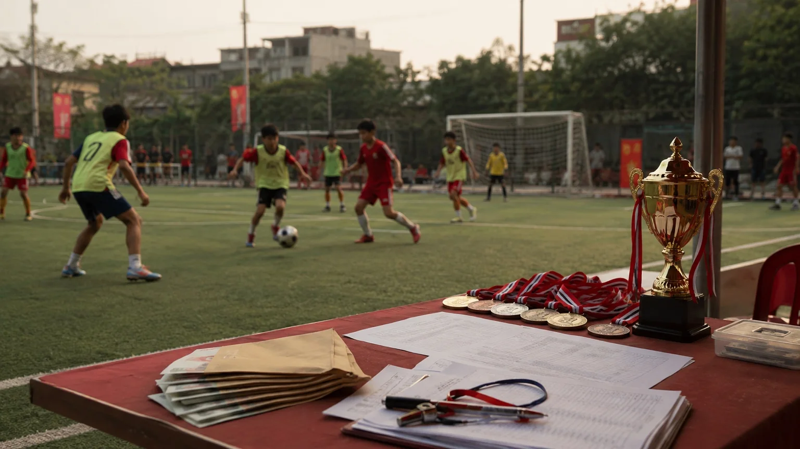
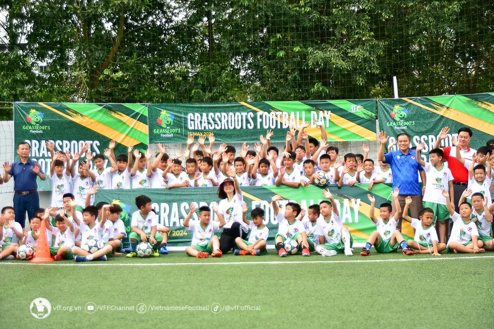
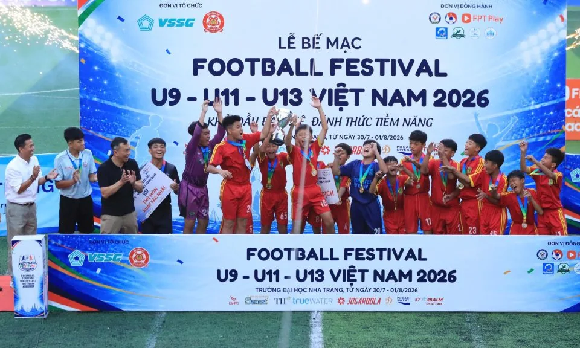
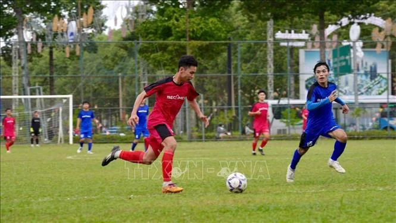

Các giải bóng đá phong trào trẻ đang tạo ra sân chơi, hay đang bán những chiếc cúp?
Sau khoảng sáu năm tiếp xúc với bóng đá phong trào Việt Nam, đặc biệt ở những lứa tuổi nhỏ từ U12 đến U16, một câu hỏi ngày càng khó bỏ qua: các giải đấu đang được tạo ra trước hết vì cầu thủ, hay vì một thị trường luôn sẵn sàng trả tiền để được thi đấu?

Phía sau một giải bóng đá phong trào không chỉ là sân cỏ và chiếc cúp, mà còn là câu chuyện về tổ chức, chi phí và giá trị thật của sân chơi. · Ảnh minh họa: Rose Newsroom
Sau khoảng sáu năm tiếp xúc với bóng đá phong trào Việt Nam, đặc biệt là bóng đá trẻ ở các lứa U nhỏ từ U12 đến U16, tôi dần có một cảm giác khá rõ: rất nhiều giải bóng đá phong trào trẻ hiện nay không chỉ được tổ chức với mục đích tạo sân chơi.
Nó còn là một hoạt động kinh doanh.
Thực ra điều đó không có gì sai.
Tổ chức một giải bóng đá cần tiền sân, trọng tài, nhân sự, cúp, huy chương, truyền thông, y tế và rất nhiều chi phí khác. Người đứng ra tổ chức bỏ công sức thì việc họ có doanh thu, thậm chí có lợi nhuận, là chuyện bình thường.
Vấn đề nằm ở chỗ khác.
Ở mặt tích cực, các giải phong trào cho những cầu thủ trẻ thêm cơ hội được thi đấu. Một đứa trẻ có thể có chiếc huy chương đầu tiên, một đội bóng có thể có chiếc cúp đầu tiên, những người bạn có thêm vài tấm hình để sau này nhìn lại.
Những điều đó đều có giá trị.
Nhưng ở chiều ngược lại, đôi lúc người ta có cảm giác các đội bóng đang bỏ tiền ra để mua một gói trải nghiệm gồm: tiền sân + một vài trận đấu + huy chương + cờ lưu niệm + một cơ hội mang cúp về chụp ảnh.
Chúng ta đang xây dựng môi trường thi đấu cho cầu thủ trẻ, hay đang bán cho họ cảm giác của một giải đấu?

“Lạm phát” giải đấu
Một trong những điều dễ nhận ra nhất của bóng đá phong trào trẻ hiện nay là số lượng giải đấu xuất hiện rất nhiều.
Có những hệ thống gần như tuần nào cũng có thể cho ra một giải nhỏ. Các lứa tuổi được chia từ U12, U13 đến U16, U17. Giải này kết thúc chưa lâu thì giải khác đã được mở đăng ký.
Với những hệ thống lớn hơn, tình trạng này không nhất thiết xuất hiện dưới dạng “mỗi tuần một giải”, mà đôi khi nằm ở việc một công thức giải đấu được lặp lại quá thường xuyên.
Ví dụ, tháng 3 có một giải dành cho học sinh THPT do nhà tài trợ A đồng hành.
Giải thành công.
Đến tháng 6 lại có một giải khác, cũng dành cho học sinh THPT, nhà tài trợ đổi thành B. Thể thức gần giống, nhóm đội gần giống, cách vận hành tương tự và người chơi tiếp tục đóng một khoản lệ phí mới để bước vào một giải đấu mới.
Ở cấp độ rộng hơn cũng có hiện tượng tương tự.
Một hệ thống có thể tổ chức nhiều giải sân 7 ở nhiều địa phương khác nhau, với những cái tên như “toàn quốc”, “mở rộng”, “khu vực”, rồi tiếp tục thay đổi tên nhà tài trợ để hình thành những giải mới.
Từng giải riêng lẻ có thể hoàn toàn hợp lý.
Nhưng khi số lượng giải tăng quá nhanh, danh hiệu cũng bắt đầu mất giá trị.
Một chiếc cúp vốn nên đại diện cho một hành trình khó khăn.
Nếu năm nào một cầu thủ cũng có thể tham dự rất nhiều giải với rất nhiều hạng đấu khác nhau, khái niệm “vô địch” đôi lúc trở nên quá dễ xuất hiện.
Và bóng đá trẻ bắt đầu có một dạng “lạm phát danh hiệu”.

Khi ai cũng có thể mang một chiếc cúp về
Một mô hình khá quen thuộc ở một số giải nhỏ là chia các đội thành nhiều nhánh sau vòng đầu.
Đội thành tích tốt đá Serie A.
Đội thấp hơn xuống Serie B.
Đôi khi còn có thêm những nhánh khác.
Ý tưởng này có mặt tích cực: các đội có trình độ tương đồng sẽ tiếp tục thi đấu với nhau và nhiều đội có cơ hội trải nghiệm vòng knock-out.
Nhưng nếu được đẩy quá xa, nó tạo ra một nghịch lý.
Bạn đóng lệ phí.
Bạn đá một, hai hoặc ba trận.
Sau đó gần như đội nào cũng có một danh hiệu nào đó để mang về.
Vô địch Serie A nhận chiếc cúp lớn hơn.
Vô địch Serie B nhận một chiếc khác.
Những đội còn lại vẫn có huy chương, cờ lưu niệm hoặc một hình thức ghi nhận nào đó.
Không ai muốn trẻ con ra về trong thất vọng. Điều đó có thể hiểu được.
Nhưng bóng đá cũng cần dạy một điều rất quan trọng:
Thất bại cũng là một phần của thể thao.
Một cầu thủ cần biết cảm giác thua trận, bị loại, nhìn người khác nâng cúp rồi quay trở lại tập luyện.
Nếu chúng ta cố gắng tạo danh hiệu cho tất cả mọi người, đôi khi chính chiếc huy chương lại mất đi ý nghĩa mà nó vốn có.
70.000 hay 100.000 đồng không phải vấn đề lớn — nhưng cộng lại thì khác
Một cầu thủ đóng khoảng 70.000–100.000 đồng cho một giải nghe không quá nhiều.
Nhưng một đội có 12, 15 hay 20 người thì con số đó đã khác.
Đối với một giải đông đội, tổng số tiền thu được cũng là một khoản đáng kể.
Điều đó một lần nữa không đồng nghĩa ban tổ chức đang làm điều gì sai.
Họ có chi phí.
Họ có rủi ro.
Họ có nhân sự phải trả.
Nhưng các đội bóng cũng có quyền đặt câu hỏi:
Với số tiền mình bỏ ra, mình nhận lại được bao nhiêu bóng đá?
- Một trận, hai trận hay ba trận?
- Mỗi trận bao nhiêu phút?
- Trọng tài và mặt sân ra sao?
- Y tế có đủ để xử lý tình huống khẩn cấp?
- Điều lệ có được áp dụng rõ ràng và nhất quán?
Hay phần giá trị lớn nhất mà đội nhận lại cuối cùng chỉ là chiếc cúp, vài tấm ảnh và một bài đăng trên mạng xã hội?
Nếu câu trả lời nghiêng quá nhiều về phần sau, có lẽ chúng ta cần suy nghĩ lại.
Gọi cầu và gian lận tuổi
Một vấn đề nghiêm trọng hơn nằm ở tính cạnh tranh.
Những giải trẻ tự phát, đặc biệt là các giải có khâu kiểm tra nhân sự không chặt chẽ, rất dễ trở thành môi trường cho việc “gọi cầu”.
Một đội đăng ký giải U15 nhưng đến lúc thi đấu lại bổ sung những cầu thủ không thường xuyên sinh hoạt với đội chỉ vì muốn tăng khả năng vô địch.
Tệ hơn nữa là câu chuyện tuổi tác.
Ở các giải mà việc xác minh hồ sơ cầu thủ không nghiêm, tranh cãi về gian lận tuổi rất dễ xuất hiện.
Khi đó giải đấu đã đi ngược lại mục tiêu ban đầu của bóng đá trẻ.
Một cầu thủ 13–14 tuổi đáng lẽ được học cách cạnh tranh công bằng, lại nhìn thấy người lớn tìm mọi cách để giành chiến thắng.
Thông điệp mà các em nhận được lúc đó là gì?
Rằng muốn thắng thì phải tìm cầu thủ mạnh hơn?
Rằng đội mình không đủ tốt thì có thể gọi người ngoài về?
Rằng luật có thể linh động miễn là không bị phát hiện?
Những thói quen đó nếu hình thành từ bóng đá trẻ sẽ rất khó mất đi khi cầu thủ lớn hơn.
Khi một chiếc cúp quan trọng hơn việc phát triển cầu thủ
“Gọi cầu” thực ra chỉ là biểu hiện của một vấn đề lớn hơn.
Đó là việc thành tích của đội bóng đôi khi được đặt cao hơn quá trình phát triển cầu thủ.
Một đội U14 đáng lẽ phải tự hỏi:
- Cầu thủ của mình tiến bộ thế nào sau ba tháng?
- Khả năng xử lý bóng tốt hơn chưa?
- Tư duy chiến thuật có được cải thiện không?
- Tinh thần tập thể có tốt hơn không?
Nhưng đôi khi câu hỏi lại trở thành:
Và nếu thắng, mạng xã hội sẽ có một bức ảnh rất đẹp.
“CHAMPIONS.”
Những người xem bên ngoài không biết đội đã tập luyện như thế nào.
Không biết bao nhiêu cầu thủ trong bức ảnh thực sự sinh hoạt thường xuyên.
Không biết giải có bao nhiêu đội.
Không biết mỗi đội đá bao nhiêu trận.
Họ chỉ nhìn thấy chiếc cúp.
Và như vậy danh hiệu trở thành một loại “tài sản truyền thông”.
Những va chạm vượt quá giới hạn của bóng đá
Bóng đá phong trào vốn có tính cạnh tranh cao.
Tranh cãi là điều khó tránh.
Nhưng ở bóng đá trẻ, trách nhiệm của người tổ chức phải cao hơn.
Các cầu thủ 13, 14, 15 hay 16 tuổi chưa phải những người trưởng thành hoàn toàn. Khi một trận đấu căng thẳng, một pha vào bóng mạnh hay một quyết định trọng tài gây tranh cãi có thể nhanh chóng đẩy cảm xúc lên rất cao.
Nếu giải đấu thiếu đội ngũ điều hành có kinh nghiệm, thiếu kiểm soát từ bên ngoài sân và thiếu những quy trình xử lý rõ ràng, một trận bóng rất dễ biến thành tranh cãi, xô xát.
Và hậu quả không chỉ là một tấm thẻ đỏ.
Chấn thương nặng ở bóng đá phong trào trẻ không phải chuyện hiếm.
Trong khi đó, không phải giải nào cũng có nhân sự y tế đủ tốt để xử lý tình huống ngay tại sân.
Nhưng các đội bóng cũng có trách nhiệm
Sẽ rất dễ nếu toàn bộ bài viết này chỉ đổ lỗi cho những người tổ chức giải.
Nhưng thực tế không phải như vậy.
Một thị trường chỉ tồn tại khi có nhu cầu.
Các đội bóng muốn giải.
Cầu thủ muốn thi đấu.
Phụ huynh muốn nhìn thấy con mình trên sân.
Người quản lý muốn đội có danh hiệu.
Trang Facebook của CLB cần nội dung để đăng.
Và đôi khi chính chúng ta cũng bị cuốn vào suy nghĩ:
đội bóng phải liên tục đi giải thì mới được xem là đang phát triển.
Rose FC từng ở trong vòng quay đó.
Có giải là đăng ký.
Có sân chơi là muốn tham dự.
Một chiếc cúp mới luôn tạo cảm giác rằng CLB đang tiến lên.
Nhưng sau một thời gian, chúng tôi bắt đầu đặt câu hỏi:
Chúng tôi cần thêm một chiếc cúp, hay cần một hệ thống thi đấu giúp cầu thủ thực sự tốt hơn?
Hai thứ đó không phải lúc nào cũng giống nhau.
Một giải đấu đắt tiền chưa chắc là xấu
Ngược lại, một giải có lệ phí cao cũng chưa chắc đang “tham lam”.
Nếu đổi lại, đội bóng nhận được lịch thi đấu rõ ràng, trọng tài tốt, sân đạt chất lượng, hồ sơ cầu thủ được kiểm soát, y tế đầy đủ, truyền thông bài bản và một hệ thống thi đấu kéo dài đủ lâu để tạo giá trị chuyên môn, thì khoản tiền đó hoàn toàn có thể hợp lý.
Đôi khi một giải tốt nhưng đắt còn đáng tham dự hơn ba giải rẻ nhưng mỗi giải chỉ đá hai trận.
Điều bóng đá trẻ Việt Nam cần không phải là thật nhiều giải.
Nó cần những hệ thống thi đấu đủ tốt để các CLB không phải liên tục đi tìm giải mới.

Vấn đề là chúng ta có quá ít lựa chọn
Đây có lẽ là nguyên nhân khiến các giải nhỏ vẫn luôn có đất sống.
Các đội bóng phong trào trẻ cần thi đấu.
Nhưng số lượng hệ thống giải được tổ chức dài hạn, có quản lý tốt, có tiêu chuẩn rõ ràng và thực sự hướng tới phát triển CLB vẫn chưa nhiều.
Khi lựa chọn quá ít, các đội gần như buộc phải tham dự những giải ngắn hạn nếu muốn cầu thủ có trận đấu.
Và khi nhu cầu luôn tồn tại, những giải mới sẽ tiếp tục xuất hiện.
Không thể giải quyết vòng lặp đó chỉ bằng việc nói các đội “đừng tham dự”.
Cần có những lựa chọn tốt hơn.
Rose FC cũng đang tìm một lựa chọn khác
Rose FC không đứng ngoài câu chuyện này.
Chúng tôi cũng từng tham dự những giải ngắn ngày.
Chúng tôi cũng từng vui với những chiếc cúp.
Và những giải đấu đó vẫn là một phần lịch sử của CLB.
Không cần phủ nhận chúng.
Nhưng khi Rose FC bắt đầu đặt mục tiêu xây dựng một đội bóng ổn định hơn, cách nhìn về thi đấu cũng thay đổi.
CLB không muốn việc phát triển chuyên môn phụ thuộc vào việc tháng này có giải phong trào nào mở đăng ký.
Chúng tôi muốn hướng tới một môi trường mà các đội bóng tồn tại như những CLB thực sự: có lịch hoạt động, có dữ liệu, có đối thủ ổn định và có một hệ thống thi đấu đủ dài để sự tiến bộ được đo bằng cả quá trình.
Đó cũng là một trong những lý do Rose FC hiện đặt VGF trong lộ trình phát triển của mình.
Với định hướng “Future From The Grassroots”, VGF là một mô hình mà Rose FC muốn tiếp tục tìm hiểu và hướng tới trong giai đoạn tới.
Điều chúng tôi kỳ vọng không phải đơn giản là thêm một giải để tham dự.
Điều Rose FC tìm kiếm là một hệ sinh thái cho bóng đá phong trào — nơi các CLB có thể gặp nhau thường xuyên hơn, thi đấu trong một môi trường được quản lý rõ ràng hơn và từng bước tạo ra sân chơi phù hợp cho những nhóm cầu thủ trẻ, trong đó có lứa học sinh dưới 18 tuổi.
Với Rose FC, việc hướng tới VGF không đơn thuần là tìm thêm một sân chơi, mà là lựa chọn một hệ thống có định hướng gần với con đường CLB đang xây dựng.
Những tiêu chí, yêu cầu và định hướng chuyên môn của VGF cũng là động lực để Rose FC từng bước hoàn thiện cách tổ chức, nâng chất lượng hoạt động và chuẩn bị tốt hơn cho chặng đường phía trước.
Nhưng ít nhất, đó là cách tiếp cận mà chúng tôi muốn thử:
tìm một hệ thống để phát triển lâu dài, thay vì đi từ giải đấu này sang giải đấu khác.
Một chiếc cúp nên là kết quả, không phải sản phẩm
Có lẽ bóng đá phong trào trẻ Việt Nam không thiếu cúp.
Chúng ta cũng không thiếu huy chương.
Điều chúng ta thiếu hơn là những môi trường giúp một cầu thủ 13 tuổi có thể chơi bóng đến 14 tuổi, 15 tuổi, 16 tuổi và vẫn cảm thấy mình đang tiến bộ.
Một giải đấu tốt hoàn toàn có quyền kiếm tiền.
Một đơn vị tổ chức tốt hoàn toàn xứng đáng có lợi nhuận.
Nhưng nếu chúng ta muốn gọi đó là một “sân chơi dành cho bóng đá trẻ”, cầu thủ phải là người nhận được giá trị lớn nhất từ sân chơi ấy.
Không phải nhà tài trợ.
Không phải trang Facebook.
Không phải chiếc cúp.
Và cũng không phải số lượng đội đăng ký.
Cầu thủ.
Bởi cuối cùng, một chiếc huy chương có thể nằm trên kệ rất lâu.
Nhưng thứ bóng đá trẻ thực sự cần để lại là kỹ năng, kỷ luật, những mối quan hệ, trải nghiệm thi đấu và ký ức về một giai đoạn tuổi trẻ được chơi bóng đúng nghĩa.
Một chiếc cúp nên là kết quả của bóng đá, chứ không phải sản phẩm mà bóng đá được tổ chức để bán.
Nếu đội bóng của bạn đang hoạt động ổn định và cũng đang tìm kiếm một môi trường dài hạn hơn, có lẽ đã đến lúc tìm hiểu những hệ thống dành riêng cho bóng đá phong trào thay vì chỉ tìm giải đấu tiếp theo.
Còn Rose FC, chúng tôi vẫn đang đi trên hành trình đó.
Hy vọng một ngày không xa, chúng ta sẽ gặp nhau ở một sân chơi cạnh tranh hơn, lành mạnh hơn — nơi chiếc cúp là kết quả của bóng đá, chứ không phải lý do để bóng đá được tổ chức.